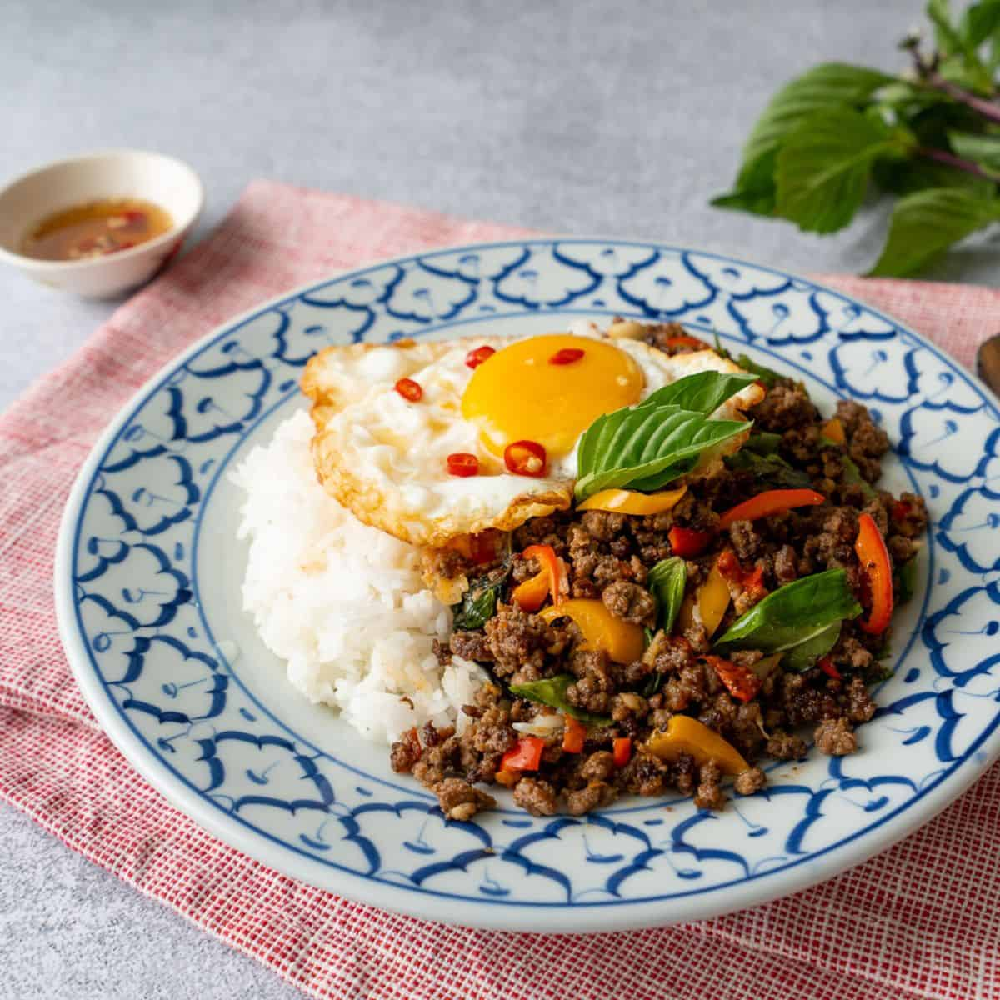

Pad Kra Pao

Description
This is my favorite go to for a quick thai cuisine after a long day.
It is simple to cook, and with the right ingredients, it will taste great!
The ingredients are not that hard to find if you live in Malaysia.
Maybe you need to find some holy basil / thai basil at the premium supermarket
but other than that, everything else is common.
Ingredients
- 5-10 Thai Chillies, or to taste
- 5 cloves of garlic
- 1 spur chillies
- 1/2 cup of long beans
- 1/2 diced small onions
- 300g of coarsly ground chicken
- 1 Tbsp oyster sauce
- 1 Tbsp soy sauce
- 2 Tsp fish sauce
- 1 1/2 tsp black soy sauce
- 2 Tbsp water
- 1 1/2 tsp sugar
- 1 1/2 cuo if holy basic leaves
- 2-3 eggs (1 per person)
- Jasmine rice for serving
- BONUS: Prik Nam Pla - mix together some
fish sauce, a squeeze of lime juice, chopped
Thai chillies and chopped garlic.
Instructions
- Pound chillies into a fine paste
- Add garlic and spur chillies and pound into rough paste
- combine all the sauces with the water and sugar. Stir until sugar is dissolved.
- In a wok or large saute pan, saute the the previous paste
with some vegetable oil over medium heat until the garlice starts to turn golden.
- Add chicken and toss until no longer in big clumps. Add the sauce from the previous step
and continue mixing.
- Add onions and long beans. Toss until chicken is done.
- Remove from heat, stir in the holy basil / thai basil
- Adjust seasoning as needed.